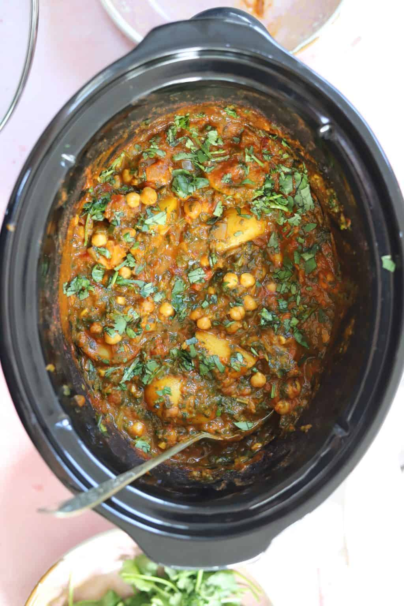

Slow Cooker Chicken Curry

Description
This is a chicken curry that is delicious and can be made in the slow cooker. Most of the effort lies in preparing the ingredients for the slow cooker, after which you can sit back and let the slow cooker do all the work for you!
Ingredients
- 1kg chicken thigh
- 500g potatoes
- 400g diced tomatoes
- 1 large onion
- 4 cloves garlic
- 2 teaspoons ginger paste
- 200mL coconut milk
- 1 tablespoon mango chutney
Spice mix
- 1 teaspoon salt
- 1 teaspoon turmeric
- 1 teaspoon chilli powder
- 2 teaspoons garam masala
Steps
- Chop the potatoes, onion and chicken thighs, and finely dice the garlic cloves. Add all to the slow cooker.
- Drain and wash the chickpeas and add to the slow cooker
- Add diced tomatoes, coconut milk, ginger paste, mango chutney and spice mix to the slow cooker.
- Put the lid on the slow cooker and cook on low for 5-6 hours